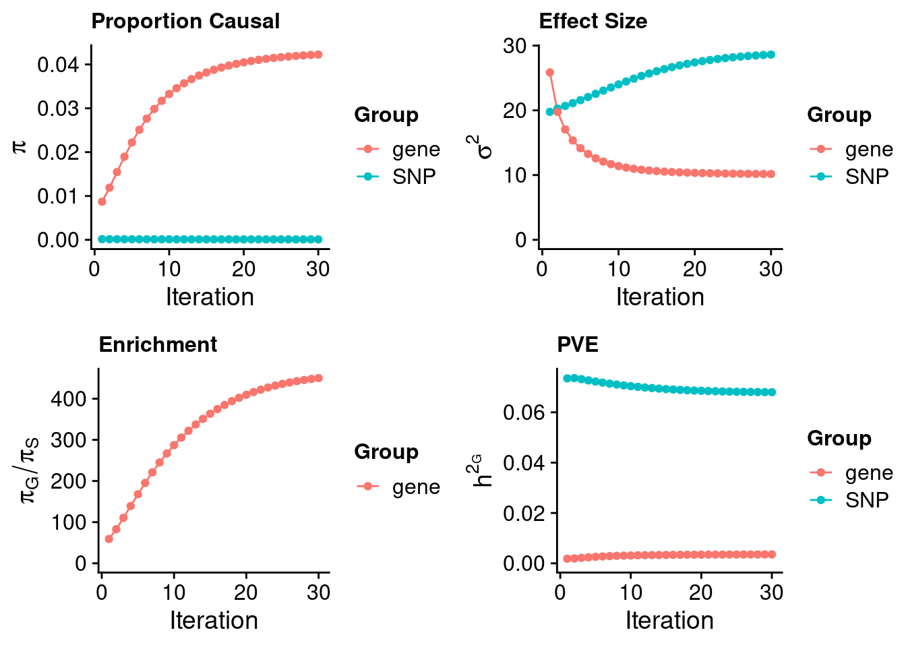
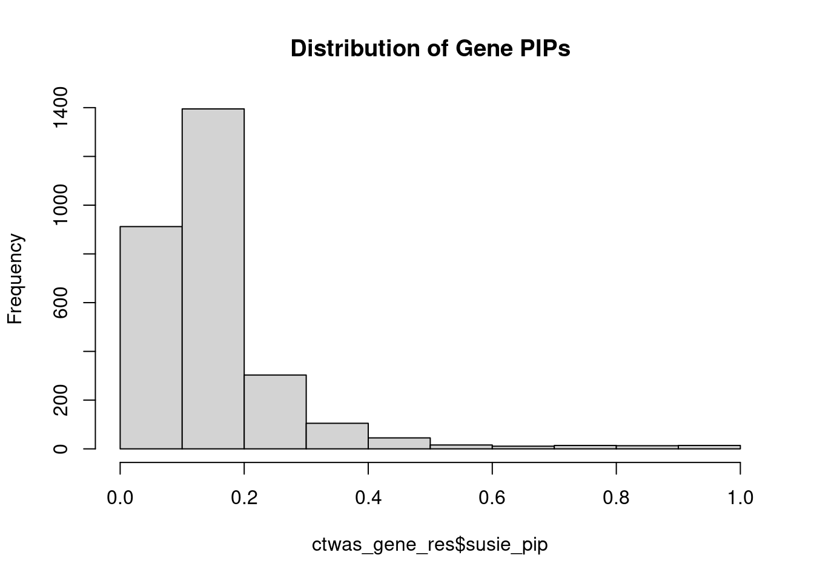
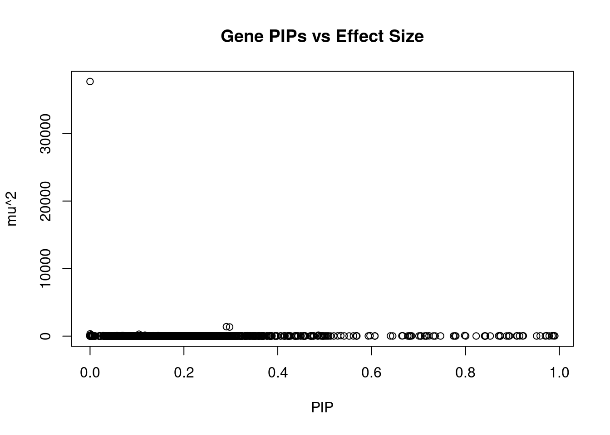
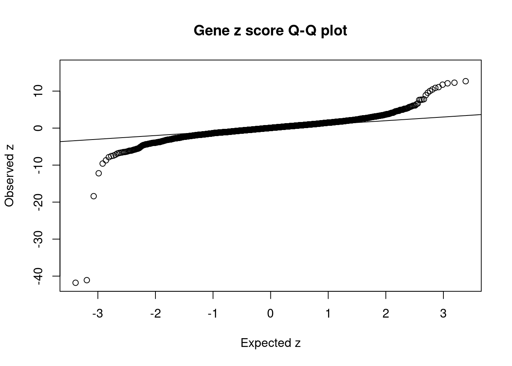
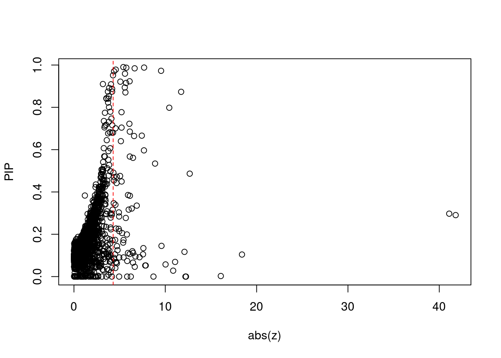
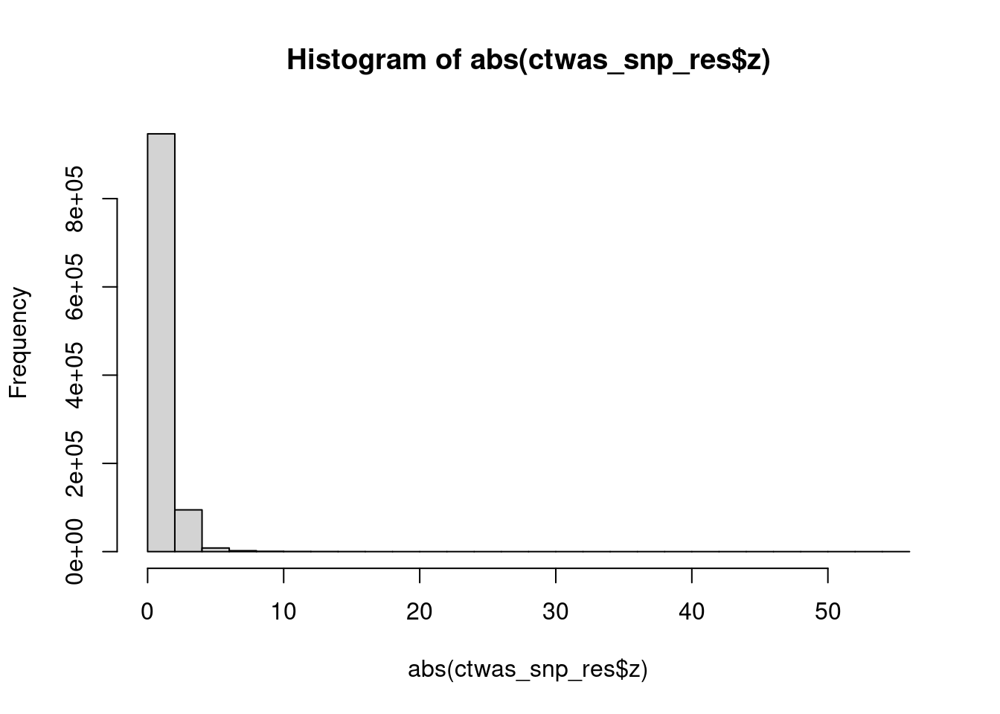

Last updated: 2023-02-12
Checks: 5 2
Knit directory: cTWAS_analysis/
This reproducible R Markdown analysis was created with workflowr (version 1.7.0). The Checks tab describes the reproducibility checks that were applied when the results were created. The Past versions tab lists the development history.
The R Markdown is untracked by Git. To know which version of the R Markdown file created these results, you’ll want to first commit it to the Git repo. If you’re still working on the analysis, you can ignore this warning. When you’re finished, you can run wflow_publish to commit the R Markdown file and build the HTML.
Great job! The global environment was empty. Objects defined in the global environment can affect the analysis in your R Markdown file in unknown ways. For reproduciblity it’s best to always run the code in an empty environment.
The command set.seed(20211220) was run prior to running the code in the R Markdown file. Setting a seed ensures that any results that rely on randomness, e.g. subsampling or permutations, are reproducible.
Great job! Recording the operating system, R version, and package versions is critical for reproducibility.
Nice! There were no cached chunks for this analysis, so you can be confident that you successfully produced the results during this run.
Using absolute paths to the files within your workflowr project makes it difficult for you and others to run your code on a different machine. Change the absolute path(s) below to the suggested relative path(s) to make your code more reproducible.
| absolute | relative |
|---|---|
| /project2/xinhe/shengqian/cTWAS/cTWAS_analysis/data/ | data |
| /project2/xinhe/shengqian/cTWAS/cTWAS_analysis/code/ctwas_config_b38.R | code/ctwas_config_b38.R |
Great! You are using Git for version control. Tracking code development and connecting the code version to the results is critical for reproducibility.
The results in this page were generated with repository version 0e327ac. See the Past versions tab to see a history of the changes made to the R Markdown and HTML files.
Note that you need to be careful to ensure that all relevant files for the analysis have been committed to Git prior to generating the results (you can use wflow_publish or wflow_git_commit). workflowr only checks the R Markdown file, but you know if there are other scripts or data files that it depends on. Below is the status of the Git repository when the results were generated:
Ignored files:
Ignored: .Rhistory
Ignored: .ipynb_checkpoints/
Ignored: analysis/figure/
Untracked files:
Untracked: Proposal plots.R
Untracked: RGS14.pdf
Untracked: RNF186.pdf
Untracked: SCZ_annotation.xlsx
Untracked: SLC8B1.pdf
Untracked: analysis/.ipynb_checkpoints/
Untracked: analysis/LDL_Liver_GTEX_mashr.Rmd
Untracked: cache/
Untracked: code/.ipynb_checkpoints/
Untracked: data/.ipynb_checkpoints/
Untracked: data/FUMA_output/
Untracked: data/GO_Terms/
Untracked: data/GTEx_Analysis_v8_eQTL.tar
Untracked: data/G_list.RData
Untracked: data/IBD_ME/
Untracked: data/LDL/
Untracked: data/LDL_E_S/
Untracked: data/LDL_M/
Untracked: data/LDL_S/
Untracked: data/LDL_multi/
Untracked: data/PGC3_SCZ_wave3_public.v2.tsv
Untracked: data/SCZ/
Untracked: data/SCZ_2014_EUR/
Untracked: data/SCZ_2018/
Untracked: data/SCZ_2018_S/
Untracked: data/SCZ_2020/
Untracked: data/SCZ_S/
Untracked: data/Supplementary Table 15 - MAGMA.xlsx
Untracked: data/Supplementary Table 20 - Prioritised Genes.xlsx
Untracked: data/UKBB/
Untracked: data/UKBB_SNPs_Info.text
Untracked: data/WhiteBlood_E/
Untracked: data/WhiteBlood_E_M/
Untracked: data/WhiteBlood_E_S_M/
Untracked: data/WhiteBlood_M/
Untracked: data/cpg_annot.RData
Untracked: data/eqtl/
Untracked: data/gencode.v26.GRCh38.genes.gtf
Untracked: data/gene_OMIM.txt
Untracked: data/gene_pip_0.8.txt
Untracked: data/gwas_sumstats/
Untracked: data/magma.genes.out
Untracked: data/mashr_Heart_Atrial_Appendage.db
Untracked: data/mashr_sqtl/
Untracked: data/mqtl/
Untracked: data/multigroup/
Untracked: data/notes.txt
Untracked: data/scz_2018.RDS
Untracked: data/summary_known_genes_annotations.xlsx
Untracked: temp_LDR/
Untracked: top_genes_32.txt
Untracked: top_genes_37.txt
Untracked: top_genes_43.txt
Untracked: top_genes_54.txt
Untracked: top_genes_81.txt
Untracked: z_snp_pos_SCZ.RData
Untracked: z_snp_pos_SCZ_2014_EUR.RData
Untracked: z_snp_pos_SCZ_2018.RData
Untracked: z_snp_pos_SCZ_2020.RData
Unstaged changes:
Deleted: analysis/Atrial_Fibrillation_Heart_Atrial_Appendage.Rmd
Deleted: analysis/Atrial_Fibrillation_Heart_Left_Ventricle.Rmd
Deleted: analysis/Autism_Brain_Amygdala.Rmd
Deleted: analysis/Autism_Brain_Anterior_cingulate_cortex_BA24.Rmd
Deleted: analysis/Autism_Brain_Caudate_basal_ganglia.Rmd
Deleted: analysis/Autism_Brain_Cerebellar_Hemisphere.Rmd
Deleted: analysis/Autism_Brain_Cerebellum.Rmd
Deleted: analysis/Autism_Brain_Cortex.Rmd
Deleted: analysis/Autism_Brain_Frontal_Cortex_BA9.Rmd
Deleted: analysis/Autism_Brain_Hippocampus.Rmd
Deleted: analysis/Autism_Brain_Hypothalamus.Rmd
Deleted: analysis/Autism_Brain_Nucleus_accumbens_basal_ganglia.Rmd
Deleted: analysis/Autism_Brain_Putamen_basal_ganglia.Rmd
Deleted: analysis/Autism_Brain_Spinal_cord_cervical_c-1.Rmd
Deleted: analysis/Autism_Brain_Substantia_nigra.Rmd
Deleted: analysis/BMI_Brain_Amygdala.Rmd
Deleted: analysis/BMI_Brain_Amygdala_S.Rmd
Deleted: analysis/BMI_Brain_Anterior_cingulate_cortex_BA24.Rmd
Deleted: analysis/BMI_Brain_Anterior_cingulate_cortex_BA24_S.Rmd
Deleted: analysis/BMI_Brain_Caudate_basal_ganglia.Rmd
Deleted: analysis/BMI_Brain_Caudate_basal_ganglia_S.Rmd
Deleted: analysis/BMI_Brain_Cerebellar_Hemisphere.Rmd
Deleted: analysis/BMI_Brain_Cerebellar_Hemisphere_S.Rmd
Deleted: analysis/BMI_Brain_Cerebellum.Rmd
Deleted: analysis/BMI_Brain_Cerebellum_S.Rmd
Deleted: analysis/BMI_Brain_Cortex.Rmd
Deleted: analysis/BMI_Brain_Cortex_S.Rmd
Deleted: analysis/BMI_Brain_Frontal_Cortex_BA9.Rmd
Deleted: analysis/BMI_Brain_Frontal_Cortex_BA9_S.Rmd
Deleted: analysis/BMI_Brain_Hippocampus.Rmd
Deleted: analysis/BMI_Brain_Hippocampus_S.Rmd
Deleted: analysis/BMI_Brain_Hypothalamus.Rmd
Deleted: analysis/BMI_Brain_Hypothalamus_S.Rmd
Deleted: analysis/BMI_Brain_Nucleus_accumbens_basal_ganglia.Rmd
Deleted: analysis/BMI_Brain_Nucleus_accumbens_basal_ganglia_S.Rmd
Deleted: analysis/BMI_Brain_Putamen_basal_ganglia.Rmd
Deleted: analysis/BMI_Brain_Putamen_basal_ganglia_S.Rmd
Deleted: analysis/BMI_Brain_Spinal_cord_cervical_c-1.Rmd
Deleted: analysis/BMI_Brain_Spinal_cord_cervical_c-1_S.Rmd
Deleted: analysis/BMI_Brain_Substantia_nigra.Rmd
Deleted: analysis/BMI_Brain_Substantia_nigra_S.Rmd
Deleted: analysis/BMI_S_results.Rmd
Deleted: analysis/Glucose_Adipose_Subcutaneous.Rmd
Deleted: analysis/Glucose_Adipose_Visceral_Omentum.Rmd
Modified: analysis/WhiteBlood_WholeBlood_E.Rmd
Modified: analysis/WhiteBlood_WholeBlood_E_M.Rmd
Modified: analysis/WhiteBlood_WholeBlood_M.Rmd
Modified: analysis/index.Rmd
Modified: code/LDL_out/LDL_Liver_GTEx_mashr.err
Modified: code/LDL_out/LDL_Liver_GTEx_mashr.out
Modified: code/RedBlood_M_out/RedBlood_WholeBlood.err
Modified: code/RedBlood_M_out/RedBlood_WholeBlood.out
Modified: code/WhiteBlood_E_out/WhiteBlood_WholeBlood.err
Modified: code/WhiteBlood_E_out/WhiteBlood_WholeBlood.out
Modified: code/WhiteBlood_M_out/WhiteBlood_WholeBlood.err
Modified: code/WhiteBlood_M_out/WhiteBlood_WholeBlood.out
Deleted: code/White_Blood_M_out/White_Blood_BreastMammary.err
Deleted: code/White_Blood_M_out/White_Blood_BreastMammary.out
Deleted: code/White_Blood_M_out/White_Blood_ColonTransverse.err
Deleted: code/White_Blood_M_out/White_Blood_ColonTransverse.out
Deleted: code/White_Blood_M_out/White_Blood_KidneyCortex.err
Deleted: code/White_Blood_M_out/White_Blood_KidneyCortex.out
Deleted: code/White_Blood_M_out/White_Blood_Lung.err
Deleted: code/White_Blood_M_out/White_Blood_Lung.out
Deleted: code/White_Blood_M_out/White_Blood_MuscleSkeletal.err
Deleted: code/White_Blood_M_out/White_Blood_MuscleSkeletal.out
Deleted: code/White_Blood_M_out/White_Blood_Ovary.err
Deleted: code/White_Blood_M_out/White_Blood_Ovary.out
Deleted: code/White_Blood_M_out/White_Blood_Prostate.err
Deleted: code/White_Blood_M_out/White_Blood_Prostate.out
Deleted: code/White_Blood_M_out/White_Blood_Testis.err
Deleted: code/White_Blood_M_out/White_Blood_Testis.out
Deleted: code/White_Blood_M_out/White_Blood_WholeBlood.err
Deleted: code/White_Blood_M_out/White_Blood_WholeBlood.out
Deleted: code/run_IBD_ctwas_rss_LDR_ME.R
Modified: code/run_WhiteBlood_ctwas_rss_LDR_E.R
Modified: code/run_WhiteBlood_ctwas_rss_LDR_M.R
Note that any generated files, e.g. HTML, png, CSS, etc., are not included in this status report because it is ok for generated content to have uncommitted changes.
There are no past versions. Publish this analysis with wflow_publish() to start tracking its development.
[1] 11502[1] 2828
1 2 3 4 5 6 7 8 9 10 11 12 13 14 15 16 17 18 19 20
268 199 136 92 117 181 138 88 114 115 180 165 44 93 84 156 178 33 239 77
21 22
37 94 [1] 1
#estimated group prior
estimated_group_prior <- estimated_group_prior_all[,ncol(group_prior_rec)]
print(estimated_group_prior) SNP gene
9.388e-05 4.225e-02 #estimated group prior variance
estimated_group_prior_var <- estimated_group_prior_var_all[,ncol(group_prior_var_rec)]
print(estimated_group_prior_var) SNP gene
28.61 10.17 #estimated enrichment
estimated_enrichment <- estimated_enrichment_all[ncol(group_prior_var_rec)]
print(estimated_enrichment)[1] 450.1#report sample size
print(sample_size)[1] 343621#report group size
print(group_size) SNP gene
8696600 2828 #estimated group PVE
estimated_group_pve <- estimated_group_pve_all[,ncol(group_prior_rec)]
print(estimated_group_pve) SNP gene
0.067986 0.003536 #total PVE
sum(estimated_group_pve)[1] 0.07152#attributable PVE
estimated_group_pve/sum(estimated_group_pve) SNP gene
0.95056 0.04944 #distribution of PIPs
hist(ctwas_gene_res$susie_pip, xlim=c(0,1), main="Distribution of Gene PIPs")
#genes with PIP>0.8 or 20 highest PIPs
head(ctwas_gene_res[order(-ctwas_gene_res$susie_pip),report_cols], max(sum(ctwas_gene_res$susie_pip>0.8), 20)) genename region_tag susie_pip mu2 PVE z num_eqtl
11257 CYP2A6 19_28 0.9902 29.03 8.367e-05 5.407 1
10708 NYNRIN 14_3 0.9880 51.39 1.478e-04 7.679 1
1597 PLTP 20_28 0.9873 36.21 1.040e-04 -5.732 1
6774 PKN3 9_66 0.9844 44.38 1.271e-04 -6.644 1
8817 VPS37D 7_47 0.9783 21.11 6.010e-05 -4.576 1
6615 TMED4 7_32 0.9727 50.56 1.431e-04 9.538 1
NA.313 <NA> 11_12 0.9703 21.32 6.020e-05 4.388 1
9054 SPTY2D1 11_13 0.9591 29.09 8.119e-05 -5.587 1
7809 CTB-50L17.10 19_5 0.9515 19.74 5.467e-05 4.277 1
NA.311 <NA> 6_103 0.9231 40.69 1.093e-04 -6.094 1
7350 BRI3 7_60 0.9214 25.56 6.853e-05 -5.079 1
1320 CWF19L1 10_64 0.9152 31.15 8.297e-05 5.707 1
9156 TMEM64 8_64 0.9101 30.24 8.008e-05 3.169 1
6855 ALDH16A1 19_34 0.9088 25.72 6.802e-05 -4.053 1
3714 SLC2A4RG 20_38 0.8938 28.39 7.386e-05 -5.563 1
NA.310 <NA> 5_78 0.8915 17.27 4.480e-05 -3.848 1
328 SLC4A7 3_20 0.8875 20.36 5.257e-05 -4.181 1
7992 TMEM150A 2_54 0.8744 16.99 4.324e-05 3.718 1
4317 RSG1 1_11 0.8741 18.54 4.716e-05 -4.179 1
2454 ST3GAL4 11_77 0.8733 68.45 1.740e-04 11.734 1
3889 STYXL1 7_48 0.8705 30.45 7.714e-05 -5.633 1
7679 PATL1 11_34 0.8527 17.09 4.240e-05 3.820 1
138 IL32 16_3 0.8427 16.67 4.087e-05 3.544 1
3330 SEC16B 1_87 0.8412 17.87 4.376e-05 -3.767 1
4669 SCYL2 12_59 0.8407 16.92 4.140e-05 -3.564 1
3501 CALD1 7_82 0.8227 17.90 4.286e-05 -3.737 1
9476 CMSS1 3_63 0.8003 18.56 4.323e-05 -3.839 1#plot PIP vs effect size
plot(ctwas_gene_res$susie_pip, ctwas_gene_res$mu2, xlab="PIP", ylab="mu^2", main="Gene PIPs vs Effect Size")
#genes with 20 largest effect sizes
head(ctwas_gene_res[order(-ctwas_gene_res$mu2),report_cols],20) genename region_tag susie_pip mu2 PVE z num_eqtl
5797 SLC22A3 6_104 0.000e+00 37695.93 0.000e+00 -6.2246 1
NA.306 <NA> 1_67 2.906e-01 1393.15 1.178e-03 -41.7935 1
4433 PSRC1 1_67 2.974e-01 1346.04 1.165e-03 -41.0871 1
10549 HLA-DMA 6_27 1.102e-04 330.51 1.060e-07 -2.3643 1
2077 ATP13A1 19_15 1.043e-01 280.30 8.506e-05 -18.3960 1
8026 PCSK9 1_34 2.691e-03 193.48 1.515e-06 16.0785 1
5988 FADS1 11_34 4.865e-01 136.38 1.931e-04 12.6748 1
8700 ABO 9_70 1.169e-01 136.29 4.638e-05 12.0997 1
10926 FADS3 11_34 6.932e-02 103.77 2.093e-05 11.0739 1
9251 ZNF329 19_39 7.982e-01 98.82 2.296e-04 10.4360 1
11078 HLA-DOB 6_27 2.389e-03 92.32 6.419e-07 -0.9047 1
9910 RHCE 1_18 5.740e-02 84.90 1.418e-05 10.0287 1
4047 NECTIN2 19_31 0.000e+00 84.36 0.000e+00 5.8246 1
10475 TBKBP1 17_27 1.451e-01 79.57 3.360e-05 -9.5850 1
11016 APOC2 19_31 0.000e+00 78.61 0.000e+00 -12.2066 1
366 PHLPP2 16_38 4.015e-07 73.29 8.564e-11 -8.7039 1
6183 POC5 5_44 2.798e-02 73.07 5.950e-06 10.8623 1
5375 GEMIN7 19_31 0.000e+00 71.85 0.000e+00 12.2666 1
11372 APOC4 19_31 0.000e+00 69.64 0.000e+00 -1.0396 1
6090 CSNK1G3 5_75 5.342e-01 68.85 1.070e-04 8.8808 1#genes with 20 highest pve
head(ctwas_gene_res[order(-ctwas_gene_res$PVE),report_cols],20) genename region_tag susie_pip mu2 PVE z num_eqtl
NA.306 <NA> 1_67 0.2906 1393.15 1.178e-03 -41.793 1
4433 PSRC1 1_67 0.2974 1346.04 1.165e-03 -41.087 1
9251 ZNF329 19_39 0.7982 98.82 2.296e-04 10.436 1
5988 FADS1 11_34 0.4865 136.38 1.931e-04 12.675 1
2454 ST3GAL4 11_77 0.8733 68.45 1.740e-04 11.734 1
10708 NYNRIN 14_3 0.9880 51.39 1.478e-04 7.679 1
6615 TMED4 7_32 0.9727 50.56 1.431e-04 9.538 1
6774 PKN3 9_66 0.9844 44.38 1.271e-04 -6.644 1
NA.311 <NA> 6_103 0.9231 40.69 1.093e-04 -6.094 1
6090 CSNK1G3 5_75 0.5342 68.85 1.070e-04 8.881 1
1597 PLTP 20_28 0.9873 36.21 1.040e-04 -5.732 1
10552 TAP2 6_27 0.5966 58.39 1.014e-04 7.663 1
2077 ATP13A1 19_15 0.1043 280.30 8.506e-05 -18.396 1
11257 CYP2A6 19_28 0.9902 29.03 8.367e-05 5.407 1
1320 CWF19L1 10_64 0.9152 31.15 8.297e-05 5.707 1
2092 SP4 7_19 0.6662 42.56 8.252e-05 -7.429 1
9054 SPTY2D1 11_13 0.9591 29.09 8.119e-05 -5.587 1
9156 TMEM64 8_64 0.9101 30.24 8.008e-05 3.169 1
3889 STYXL1 7_48 0.8705 30.45 7.714e-05 -5.633 1
3714 SLC2A4RG 20_38 0.8938 28.39 7.386e-05 -5.563 1#genes with 20 largest z scores
head(ctwas_gene_res[order(-abs(ctwas_gene_res$z)),report_cols],20) genename region_tag susie_pip mu2 PVE z num_eqtl
NA.306 <NA> 1_67 2.906e-01 1393.15 1.178e-03 -41.793 1
4433 PSRC1 1_67 2.974e-01 1346.04 1.165e-03 -41.087 1
2077 ATP13A1 19_15 1.043e-01 280.30 8.506e-05 -18.396 1
8026 PCSK9 1_34 2.691e-03 193.48 1.515e-06 16.079 1
5988 FADS1 11_34 4.865e-01 136.38 1.931e-04 12.675 1
5375 GEMIN7 19_31 0.000e+00 71.85 0.000e+00 12.267 1
11016 APOC2 19_31 0.000e+00 78.61 0.000e+00 -12.207 1
8700 ABO 9_70 1.169e-01 136.29 4.638e-05 12.100 1
2454 ST3GAL4 11_77 8.733e-01 68.45 1.740e-04 11.734 1
10926 FADS3 11_34 6.932e-02 103.77 2.093e-05 11.074 1
6183 POC5 5_44 2.798e-02 73.07 5.950e-06 10.862 1
9251 ZNF329 19_39 7.982e-01 98.82 2.296e-04 10.436 1
9910 RHCE 1_18 5.740e-02 84.90 1.418e-05 10.029 1
10475 TBKBP1 17_27 1.451e-01 79.57 3.360e-05 -9.585 1
6615 TMED4 7_32 9.727e-01 50.56 1.431e-04 9.538 1
6090 CSNK1G3 5_75 5.342e-01 68.85 1.070e-04 8.881 1
366 PHLPP2 16_38 4.015e-07 73.29 8.564e-11 -8.704 1
10996 HLA-DQB2 6_26 5.260e-02 42.63 6.524e-06 -7.859 1
9071 HLA-DQB1 6_26 5.244e-02 42.15 6.432e-06 7.804 1
10708 NYNRIN 14_3 9.880e-01 51.39 1.478e-04 7.679 1#set nominal signifiance threshold for z scores
alpha <- 0.05
#bonferroni adjusted threshold for z scores
sig_thresh <- qnorm(1-(alpha/nrow(ctwas_gene_res)/2), lower=T)
#Q-Q plot for z scores
obs_z <- ctwas_gene_res$z[order(ctwas_gene_res$z)]
exp_z <- qnorm((1:nrow(ctwas_gene_res))/nrow(ctwas_gene_res))
plot(exp_z, obs_z, xlab="Expected z", ylab="Observed z", main="Gene z score Q-Q plot")
abline(a=0,b=1)
#plot z score vs PIP
plot(abs(ctwas_gene_res$z), ctwas_gene_res$susie_pip, xlab="abs(z)", ylab="PIP")
abline(v=sig_thresh, col="red", lty=2)
#number of significant z scores
sum(abs(ctwas_gene_res$z) > sig_thresh)[1] 92#proportion of significant z scores
mean(abs(ctwas_gene_res$z) > sig_thresh)[1] 0.03253#genes with most significant z scores
head(ctwas_gene_res[order(-abs(ctwas_gene_res$z)),report_cols],20) genename region_tag susie_pip mu2 PVE z num_eqtl
NA.306 <NA> 1_67 2.906e-01 1393.15 1.178e-03 -41.793 1
4433 PSRC1 1_67 2.974e-01 1346.04 1.165e-03 -41.087 1
2077 ATP13A1 19_15 1.043e-01 280.30 8.506e-05 -18.396 1
8026 PCSK9 1_34 2.691e-03 193.48 1.515e-06 16.079 1
5988 FADS1 11_34 4.865e-01 136.38 1.931e-04 12.675 1
5375 GEMIN7 19_31 0.000e+00 71.85 0.000e+00 12.267 1
11016 APOC2 19_31 0.000e+00 78.61 0.000e+00 -12.207 1
8700 ABO 9_70 1.169e-01 136.29 4.638e-05 12.100 1
2454 ST3GAL4 11_77 8.733e-01 68.45 1.740e-04 11.734 1
10926 FADS3 11_34 6.932e-02 103.77 2.093e-05 11.074 1
6183 POC5 5_44 2.798e-02 73.07 5.950e-06 10.862 1
9251 ZNF329 19_39 7.982e-01 98.82 2.296e-04 10.436 1
9910 RHCE 1_18 5.740e-02 84.90 1.418e-05 10.029 1
10475 TBKBP1 17_27 1.451e-01 79.57 3.360e-05 -9.585 1
6615 TMED4 7_32 9.727e-01 50.56 1.431e-04 9.538 1
6090 CSNK1G3 5_75 5.342e-01 68.85 1.070e-04 8.881 1
366 PHLPP2 16_38 4.015e-07 73.29 8.564e-11 -8.704 1
10996 HLA-DQB2 6_26 5.260e-02 42.63 6.524e-06 -7.859 1
9071 HLA-DQB1 6_26 5.244e-02 42.15 6.432e-06 7.804 1
10708 NYNRIN 14_3 9.880e-01 51.39 1.478e-04 7.679 1#snps with PIP>0.8 or 20 highest PIPs
head(ctwas_snp_res[order(-ctwas_snp_res$susie_pip),report_cols_snps],
max(sum(ctwas_snp_res$susie_pip>0.8), 20)) id region_tag susie_pip mu2 PVE z
14605 rs2495502 1_34 1.0000 401.68 1.169e-03 6.2922
71888 rs1042034 2_13 1.0000 261.73 7.617e-04 16.5730
71894 rs934197 2_13 1.0000 413.10 1.202e-03 33.0609
73624 rs780093 2_16 1.0000 198.48 5.776e-04 -14.1426
326578 rs115740542 6_20 1.0000 173.22 5.041e-04 -12.5323
370564 rs60425481 6_104 1.0000 254263.08 7.400e-01 -7.1125
759176 rs113408695 17_39 1.0000 163.07 4.746e-04 12.7688
792455 rs73013176 19_9 1.0000 238.12 6.930e-04 -16.2327
792493 rs137992968 19_9 1.0000 234.44 6.823e-04 -10.7526
795290 rs3794991 19_15 1.0000 501.74 1.460e-03 -21.4921
802596 rs62117204 19_31 1.0000 828.22 2.410e-03 -44.6722
802614 rs111794050 19_31 1.0000 814.02 2.369e-03 -33.5996
802647 rs814573 19_31 1.0000 2381.88 6.932e-03 55.5379
802649 rs113345881 19_31 1.0000 830.63 2.417e-03 -34.3186
802652 rs12721109 19_31 1.0000 1434.60 4.175e-03 -46.3258
897616 rs67138090 6_27 1.0000 2561.39 7.454e-03 4.4111
813183 rs34507316 20_13 1.0000 97.35 2.833e-04 -6.8147
327311 rs454182 6_22 1.0000 151.60 4.412e-04 4.7791
759202 rs8070232 17_39 1.0000 197.65 5.752e-04 -8.0915
71839 rs11679386 2_12 1.0000 168.71 4.910e-04 11.9094
71974 rs1848922 2_13 1.0000 242.15 7.047e-04 25.4123
71897 rs548145 2_13 1.0000 713.12 2.075e-03 33.0860
505608 rs115478735 9_70 1.0000 335.71 9.770e-04 19.0118
497391 rs2437818 9_53 1.0000 81.53 2.373e-04 6.3340
1045619 rs1800961 20_28 1.0000 78.53 2.285e-04 -8.8970
733872 rs12149380 16_38 1.0000 134.20 3.906e-04 -4.1646
758260 rs1801689 17_38 1.0000 87.71 2.553e-04 9.3964
802310 rs73036721 19_30 1.0000 64.83 1.887e-04 -7.7879
428656 rs7012814 8_12 1.0000 100.62 2.928e-04 10.9061
444842 rs4738679 8_45 1.0000 117.23 3.412e-04 -11.6999
278105 rs1499279 5_30 1.0000 68.69 1.999e-04 -8.3746
79689 rs72800939 2_28 1.0000 61.03 1.776e-04 -7.8457
14616 rs10888896 1_34 1.0000 150.41 4.377e-04 11.8938
7420 rs79598313 1_18 1.0000 50.68 1.475e-04 7.0246
443447 rs140753685 8_42 1.0000 61.14 1.779e-04 7.7992
802355 rs62115478 19_30 1.0000 202.52 5.894e-04 -14.3262
55203 rs2807848 1_112 1.0000 61.02 1.776e-04 -7.8828
14575 rs11580527 1_34 1.0000 92.62 2.695e-04 -11.1672
463800 rs13252684 8_83 1.0000 266.94 7.768e-04 11.9644
1033018 rs73045960 19_32 1.0000 159.95 4.655e-04 -12.8179
795321 rs113619686 19_15 1.0000 74.34 2.164e-04 0.5939
326557 rs72834643 6_20 1.0000 53.42 1.555e-04 -6.0487
463797 rs6470359 8_83 1.0000 317.18 9.230e-04 9.6469
813182 rs6075251 20_13 1.0000 69.96 2.036e-04 -2.3298
352856 rs9496567 6_67 1.0000 42.29 1.231e-04 -6.3402
322849 rs11376017 6_13 0.9999 71.92 2.093e-04 -8.5079
702570 rs2070895 15_26 0.9998 63.99 1.862e-04 7.7347
792519 rs4804149 19_10 0.9998 50.25 1.462e-04 6.5194
792572 rs322144 19_10 0.9998 70.10 2.040e-04 3.9466
370652 rs374071816 6_104 0.9998 45729.13 1.330e-01 16.2541
733915 rs57186116 16_38 0.9996 75.01 2.182e-04 7.7146
543351 rs17875416 10_71 0.9995 41.39 1.204e-04 -6.2663
79553 rs139029940 2_27 0.9994 41.05 1.194e-04 6.8150
284557 rs7701166 5_44 0.9993 39.76 1.156e-04 -2.4848
497364 rs2297400 9_53 0.9992 43.99 1.279e-04 6.6057
608882 rs7397189 12_36 0.9992 37.31 1.085e-04 -5.7710
794930 rs2302209 19_14 0.9988 46.79 1.360e-04 6.6360
433174 rs1495743 8_20 0.9986 44.41 1.291e-04 -6.5160
912208 rs662138 6_103 0.9982 124.29 3.611e-04 11.2979
739367 rs2255451 16_48 0.9982 41.34 1.201e-04 -6.3628
463788 rs2980875 8_83 0.9976 596.29 1.731e-03 -22.1022
912140 rs12208357 6_103 0.9974 204.82 5.945e-04 12.2823
14623 rs471705 1_34 0.9973 225.29 6.539e-04 16.2630
792476 rs147985405 19_9 0.9971 2728.60 7.918e-03 -48.9352
585738 rs75542613 11_70 0.9970 38.50 1.117e-04 -6.5344
585733 rs3135506 11_70 0.9966 160.77 4.663e-04 12.3730
383559 rs56130071 7_19 0.9961 107.27 3.110e-04 10.9789
818136 rs76981217 20_24 0.9960 36.88 1.069e-04 7.6925
624874 rs653178 12_67 0.9954 109.75 3.179e-04 11.0501
444810 rs56386732 8_45 0.9947 36.26 1.050e-04 -7.0123
897506 rs9275698 6_27 0.9937 2533.19 7.325e-03 -0.6590
663674 rs3934835 13_62 0.9935 62.74 1.814e-04 7.9439
803515 rs838145 19_33 0.9921 107.70 3.110e-04 -11.8738
141832 rs709149 3_9 0.9918 41.36 1.194e-04 -6.7820
327748 rs3130253 6_23 0.9901 31.47 9.067e-05 5.6415
328533 rs28780090 6_24 0.9888 54.57 1.570e-04 6.8714
818087 rs6029132 20_24 0.9874 42.32 1.216e-04 -6.7625
613248 rs148481241 12_44 0.9856 29.40 8.432e-05 5.0955
148478 rs9834932 3_24 0.9856 72.21 2.071e-04 -8.4816
284498 rs10062361 5_44 0.9849 228.73 6.556e-04 20.3206
733648 rs4396539 16_37 0.9790 29.34 8.360e-05 -5.2329
594365 rs11048034 12_9 0.9746 39.91 1.132e-04 6.1337
79566 rs13430143 2_27 0.9720 100.23 2.835e-04 -3.3445
405771 rs3197597 7_61 0.9711 30.67 8.668e-05 -5.0452
247912 rs114756490 4_100 0.9698 27.78 7.840e-05 4.9889
479716 rs1556516 9_16 0.9670 80.15 2.256e-04 -8.9921
225183 rs1458038 4_54 0.9661 56.62 1.592e-04 -7.4179
628254 rs11057830 12_76 0.9656 27.84 7.822e-05 4.9296
79569 rs4076834 2_27 0.9635 481.67 1.351e-03 -20.1086
326396 rs75080831 6_19 0.9621 62.84 1.759e-04 -7.9067
30636 rs1730862 1_66 0.9608 31.11 8.700e-05 -5.2846
1014613 rs78173576 17_6 0.9599 32.48 9.075e-05 -5.1389
818140 rs73124945 20_24 0.9594 33.14 9.252e-05 -7.7754
390928 rs141379002 7_33 0.9583 27.65 7.712e-05 4.8970
762335 rs4969183 17_44 0.9572 53.00 1.476e-04 7.1693
569362 rs6591179 11_36 0.9569 27.87 7.760e-05 4.8933
327719 rs28986304 6_23 0.9523 44.83 1.242e-04 7.3825
825857 rs62219001 21_2 0.9512 28.05 7.764e-05 -4.9484
471852 rs7024888 9_3 0.9506 27.66 7.653e-05 -5.0558
912244 rs2297374 6_103 0.9401 135.79 3.715e-04 -12.1550
1015731 rs2908806 17_7 0.9348 40.38 1.098e-04 -6.0264
733913 rs9652628 16_38 0.9345 137.95 3.751e-04 11.9505
622967 rs1196760 12_63 0.9316 27.52 7.461e-05 -4.8667
637141 rs1012130 13_10 0.9294 48.67 1.316e-04 -2.7810
355592 rs12199109 6_73 0.9151 27.03 7.200e-05 4.8570
858234 rs16828576 1_16 0.9132 31.35 8.332e-05 -4.7429
510558 rs10905277 10_8 0.9096 29.84 7.899e-05 5.1258
749224 rs117859452 17_17 0.9096 26.40 6.987e-05 -3.8517
543062 rs12244851 10_70 0.9080 40.83 1.079e-04 -4.8831
749133 rs3032928 17_17 0.9063 36.73 9.688e-05 6.1119
729756 rs821840 16_30 0.9063 179.77 4.741e-04 -13.4753
14606 rs1887552 1_34 0.9017 445.83 1.170e-03 -9.8686
792560 rs322125 19_10 0.9010 120.04 3.147e-04 -7.4704
71891 rs78610189 2_13 0.9004 63.88 1.674e-04 -8.3855
198595 rs36205397 4_4 0.9002 43.16 1.131e-04 6.1594
123929 rs7569317 2_120 0.8994 53.30 1.395e-04 7.9007
328556 rs62407548 6_24 0.8949 71.31 1.857e-04 8.2573
497384 rs2777788 9_53 0.8939 67.50 1.756e-04 -5.7370
792486 rs2738447 19_9 0.8869 406.10 1.048e-03 17.7674
821639 rs10641149 20_32 0.8834 29.28 7.526e-05 5.0758
487702 rs11144506 9_35 0.8711 28.85 7.315e-05 5.0427
582002 rs201912654 11_59 0.8697 41.15 1.042e-04 -6.3056
803490 rs62130338 19_33 0.8683 44.66 1.129e-04 8.4694
813163 rs78348000 20_13 0.8676 32.23 8.136e-05 5.2206
284521 rs3843482 5_44 0.8605 444.53 1.113e-03 25.0344
808828 rs74273659 20_5 0.8586 26.73 6.680e-05 4.6468
196808 rs5855544 3_120 0.8514 26.74 6.625e-05 -4.5937
753847 rs4793601 17_28 0.8492 32.24 7.968e-05 -6.2095
361795 rs9321207 6_86 0.8485 32.48 8.020e-05 5.4016
99599 rs138192199 2_69 0.8469 26.63 6.564e-05 4.6708
759187 rs9303012 17_39 0.8457 197.13 4.852e-04 2.2591
816881 rs11167269 20_21 0.8435 62.56 1.536e-04 -7.7950
1035312 rs3764613 19_32 0.8405 33.83 8.276e-05 -4.8164
71691 rs6531234 2_12 0.8380 44.18 1.078e-04 -7.1708
818105 rs6102034 20_24 0.8372 104.13 2.537e-04 -11.1900
40333 rs1795240 1_84 0.8350 27.53 6.689e-05 -4.8462
637133 rs1799955 13_10 0.8345 82.21 1.997e-04 -6.6936
428625 rs117037226 8_11 0.8340 26.40 6.408e-05 4.1922
200820 rs2002574 4_10 0.8312 27.18 6.574e-05 -4.5583
702569 rs139823028 15_26 0.8299 26.72 6.452e-05 3.9898
733853 rs12708919 16_38 0.8283 159.38 3.842e-04 11.3028
1014343 rs55714927 17_6 0.8246 96.78 2.322e-04 -9.6448
833098 rs2835302 21_16 0.8244 27.72 6.649e-05 -4.6537
792529 rs58495388 19_10 0.8213 36.41 8.702e-05 5.5313
834235 rs149577713 21_19 0.8156 33.88 8.041e-05 3.3168
818281 rs11086801 20_25 0.8123 117.70 2.782e-04 10.9752
862519 rs12740374 1_67 0.8102 1568.76 3.699e-03 -41.7935
428667 rs13265179 8_12 0.8086 38.95 9.165e-05 -7.4149
537852 rs10882161 10_59 0.8056 31.26 7.330e-05 -5.4756
499962 rs2762469 9_56 0.8039 26.81 6.273e-05 -4.5317#plot PIP vs effect size
#plot(ctwas_snp_res$susie_pip, ctwas_snp_res$mu2, xlab="PIP", ylab="mu^2", main="SNP PIPs vs Effect Size")
#SNPs with 50 largest effect sizes
head(ctwas_snp_res[order(-ctwas_snp_res$mu2),report_cols_snps],50) id region_tag susie_pip mu2 PVE z
370560 rs3106169 6_104 7.729e-01 254324 5.720e-01 11.139
370561 rs3127598 6_104 4.346e-01 254322 3.217e-01 11.135
370569 rs3106167 6_104 4.047e-01 254321 2.996e-01 11.136
370564 rs60425481 6_104 1.000e+00 254263 7.400e-01 -7.113
370553 rs11755965 6_104 2.269e-05 254243 1.679e-05 11.140
370544 rs12194962 6_104 2.998e-15 253708 2.213e-15 11.106
370562 rs3127597 6_104 4.552e-15 253541 3.359e-15 11.145
370523 rs3119311 6_104 0.000e+00 184266 0.000e+00 8.031
370517 rs3127579 6_104 0.000e+00 134045 0.000e+00 7.568
370511 rs10945658 6_104 0.000e+00 117098 0.000e+00 8.309
370510 rs3119308 6_104 0.000e+00 116814 0.000e+00 8.274
370506 rs3103352 6_104 0.000e+00 116769 0.000e+00 8.522
370502 rs3101821 6_104 0.000e+00 116358 0.000e+00 8.528
370508 rs12205178 6_104 0.000e+00 116144 0.000e+00 8.297
370500 rs148015788 6_104 0.000e+00 114639 0.000e+00 8.351
370611 rs3124784 6_104 0.000e+00 95684 0.000e+00 9.680
370612 rs3127596 6_104 0.000e+00 86712 0.000e+00 9.556
370605 rs3127599 6_104 0.000e+00 86360 0.000e+00 9.259
370575 rs2481030 6_104 0.000e+00 83598 0.000e+00 4.811
370540 rs2504949 6_104 0.000e+00 68992 0.000e+00 2.937
370593 rs388170 6_104 0.000e+00 63823 0.000e+00 3.833
370515 rs316013 6_104 0.000e+00 61217 0.000e+00 -3.002
370516 rs316012 6_104 0.000e+00 60476 0.000e+00 -3.074
370596 rs9355288 6_104 0.000e+00 58810 0.000e+00 6.319
370504 rs610206 6_104 0.000e+00 55899 0.000e+00 -2.944
370505 rs595374 6_104 0.000e+00 55793 0.000e+00 -2.921
370512 rs315995 6_104 0.000e+00 54412 0.000e+00 -3.207
370509 rs543435 6_104 0.000e+00 54203 0.000e+00 -3.250
370558 rs452867 6_104 0.000e+00 50537 0.000e+00 -7.124
370567 rs367334 6_104 0.000e+00 50505 0.000e+00 -7.106
370556 rs600584 6_104 0.000e+00 50497 0.000e+00 -7.113
370555 rs589931 6_104 0.000e+00 50497 0.000e+00 -7.116
370557 rs434953 6_104 0.000e+00 50496 0.000e+00 -7.111
370563 rs380498 6_104 0.000e+00 50495 0.000e+00 -7.115
370531 rs3119312 6_104 0.000e+00 48834 0.000e+00 3.771
370652 rs374071816 6_104 9.998e-01 45729 1.330e-01 16.254
370590 rs2872317 6_104 0.000e+00 44360 0.000e+00 6.746
370587 rs2313453 6_104 0.000e+00 44333 0.000e+00 6.718
370578 rs146184004 6_104 0.000e+00 42572 0.000e+00 6.534
370657 rs4252185 6_104 2.295e-04 42044 2.808e-05 15.878
370581 rs624319 6_104 0.000e+00 41736 0.000e+00 -6.291
370580 rs637614 6_104 0.000e+00 41666 0.000e+00 -6.362
370582 rs486339 6_104 0.000e+00 41385 0.000e+00 -6.311
370527 rs316036 6_104 0.000e+00 40557 0.000e+00 -7.009
370579 rs555754 6_104 0.000e+00 40242 0.000e+00 -6.593
370658 rs12212146 6_104 0.000e+00 32750 0.000e+00 -2.410
370525 rs582280 6_104 0.000e+00 31626 0.000e+00 2.635
370524 rs497039 6_104 0.000e+00 31618 0.000e+00 2.634
370711 rs1247539 6_104 0.000e+00 25553 0.000e+00 -4.294
370608 rs9346818 6_104 0.000e+00 25017 0.000e+00 7.950#SNPs with 50 highest pve
head(ctwas_snp_res[order(-ctwas_snp_res$PVE),report_cols_snps],50) id region_tag susie_pip mu2 PVE z
370564 rs60425481 6_104 1.0000 254263.1 0.7399521 -7.113
370560 rs3106169 6_104 0.7729 254323.7 0.5720466 11.139
370561 rs3127598 6_104 0.4346 254322.2 0.3216625 11.135
370569 rs3106167 6_104 0.4047 254321.2 0.2995505 11.136
370652 rs374071816 6_104 0.9998 45729.1 0.1330496 16.254
792476 rs147985405 19_9 0.9971 2728.6 0.0079179 -48.935
897616 rs67138090 6_27 1.0000 2561.4 0.0074541 4.411
897506 rs9275698 6_27 0.9937 2533.2 0.0073252 -0.659
802647 rs814573 19_31 1.0000 2381.9 0.0069317 55.538
802652 rs12721109 19_31 1.0000 1434.6 0.0041749 -46.326
862519 rs12740374 1_67 0.8102 1568.8 0.0036989 -41.793
802649 rs113345881 19_31 1.0000 830.6 0.0024173 -34.319
802596 rs62117204 19_31 1.0000 828.2 0.0024103 -44.672
802614 rs111794050 19_31 1.0000 814.0 0.0023689 -33.600
71897 rs548145 2_13 1.0000 713.1 0.0020753 33.086
463788 rs2980875 8_83 0.9976 596.3 0.0017312 -22.102
795290 rs3794991 19_15 1.0000 501.7 0.0014602 -21.492
79569 rs4076834 2_27 0.9635 481.7 0.0013506 -20.109
71894 rs934197 2_13 1.0000 413.1 0.0012022 33.061
14606 rs1887552 1_34 0.9017 445.8 0.0011699 -9.869
14605 rs2495502 1_34 1.0000 401.7 0.0011690 6.292
284521 rs3843482 5_44 0.8605 444.5 0.0011132 25.034
792486 rs2738447 19_9 0.8869 406.1 0.0010482 17.767
505608 rs115478735 9_70 1.0000 335.7 0.0009770 19.012
792466 rs8102273 19_9 0.5878 542.6 0.0009283 -14.168
463797 rs6470359 8_83 1.0000 317.2 0.0009230 9.647
463800 rs13252684 8_83 1.0000 266.9 0.0007768 11.964
71888 rs1042034 2_13 1.0000 261.7 0.0007617 16.573
71974 rs1848922 2_13 1.0000 242.2 0.0007047 25.412
792455 rs73013176 19_9 1.0000 238.1 0.0006930 -16.233
792493 rs137992968 19_9 1.0000 234.4 0.0006823 -10.753
284498 rs10062361 5_44 0.9849 228.7 0.0006556 20.321
14623 rs471705 1_34 0.9973 225.3 0.0006539 16.263
792463 rs68010235 19_9 0.4122 534.5 0.0006411 -13.919
912140 rs12208357 6_103 0.9974 204.8 0.0005945 12.282
802355 rs62115478 19_30 1.0000 202.5 0.0005894 -14.326
73624 rs780093 2_16 1.0000 198.5 0.0005776 -14.143
759202 rs8070232 17_39 1.0000 197.7 0.0005752 -8.091
326578 rs115740542 6_20 1.0000 173.2 0.0005041 -12.532
71839 rs11679386 2_12 1.0000 168.7 0.0004910 11.909
759187 rs9303012 17_39 0.8457 197.1 0.0004852 2.259
759176 rs113408695 17_39 1.0000 163.1 0.0004746 12.769
729756 rs821840 16_30 0.9063 179.8 0.0004741 -13.475
585733 rs3135506 11_70 0.9966 160.8 0.0004663 12.373
1033018 rs73045960 19_32 1.0000 160.0 0.0004655 -12.818
862515 rs7528419 1_67 0.1009 1566.0 0.0004598 -41.737
327311 rs454182 6_22 1.0000 151.6 0.0004412 4.779
14616 rs10888896 1_34 1.0000 150.4 0.0004377 11.894
309099 rs12657266 5_92 0.7753 177.9 0.0004013 13.895
733872 rs12149380 16_38 1.0000 134.2 0.0003906 -4.165#histogram of (abs) SNP z scores
hist(abs(ctwas_snp_res$z))
#SNPs with 50 largest z scores
head(ctwas_snp_res[order(-abs(ctwas_snp_res$z)),report_cols_snps],50) id region_tag susie_pip mu2 PVE z
802647 rs814573 19_31 1.000e+00 2381.9 6.932e-03 55.54
792476 rs147985405 19_9 9.971e-01 2728.6 7.918e-03 -48.94
792471 rs73015020 19_9 2.023e-03 2717.0 1.600e-05 -48.80
792469 rs138175288 19_9 6.112e-04 2714.7 4.829e-06 -48.78
792470 rs138294113 19_9 1.421e-04 2711.6 1.121e-06 -48.75
792472 rs77140532 19_9 7.429e-05 2710.5 5.860e-07 -48.74
792473 rs112552009 19_9 1.073e-05 2706.3 8.455e-08 -48.71
792474 rs10412048 19_9 1.558e-05 2707.4 1.227e-07 -48.70
792468 rs55997232 19_9 1.110e-09 2688.4 8.686e-12 -48.52
802652 rs12721109 19_31 1.000e+00 1434.6 4.175e-03 -46.33
802596 rs62117204 19_31 1.000e+00 828.2 2.410e-03 -44.67
802583 rs1551891 19_31 0.000e+00 480.8 0.000e+00 -42.27
862519 rs12740374 1_67 8.102e-01 1568.8 3.699e-03 -41.79
862515 rs7528419 1_67 1.009e-01 1566.0 4.598e-04 -41.74
862526 rs646776 1_67 7.733e-02 1564.4 3.521e-04 41.73
862525 rs629301 1_67 1.311e-02 1560.5 5.953e-05 41.69
862537 rs583104 1_67 4.988e-04 1515.7 2.200e-06 41.09
862540 rs4970836 1_67 4.860e-04 1512.6 2.139e-06 41.05
862542 rs1277930 1_67 5.034e-04 1507.7 2.209e-06 40.98
862543 rs599839 1_67 5.295e-04 1506.9 2.322e-06 40.96
792477 rs17248769 19_9 0.000e+00 1982.9 0.000e+00 -40.84
792478 rs2228671 19_9 0.000e+00 1971.1 0.000e+00 -40.70
862523 rs3832016 1_67 2.529e-04 1462.2 1.076e-06 40.40
862520 rs660240 1_67 2.481e-04 1454.4 1.050e-06 40.29
862538 rs602633 1_67 3.071e-04 1431.8 1.280e-06 39.96
792467 rs9305020 19_9 0.000e+00 1725.0 0.000e+00 -34.84
802643 rs405509 19_31 0.000e+00 967.3 0.000e+00 -34.64
862506 rs4970834 1_67 6.964e-04 1084.7 2.198e-06 -34.62
802649 rs113345881 19_31 1.000e+00 830.6 2.417e-03 -34.32
802567 rs62120566 19_31 0.000e+00 1399.3 0.000e+00 -33.74
802614 rs111794050 19_31 1.000e+00 814.0 2.369e-03 -33.60
71897 rs548145 2_13 1.000e+00 713.1 2.075e-03 33.09
802620 rs4802238 19_31 0.000e+00 981.8 0.000e+00 33.08
71894 rs934197 2_13 1.000e+00 413.1 1.202e-03 33.06
802561 rs188099946 19_31 0.000e+00 1340.9 0.000e+00 -33.04
802631 rs2972559 19_31 0.000e+00 1347.9 0.000e+00 32.29
802555 rs201314191 19_31 0.000e+00 1242.0 0.000e+00 -32.07
862527 rs3902354 1_67 2.775e-04 922.5 7.451e-07 32.00
862516 rs11102967 1_67 2.691e-04 918.6 7.194e-07 31.94
862541 rs4970837 1_67 3.461e-04 915.7 9.223e-07 31.86
802622 rs56394238 19_31 0.000e+00 984.2 0.000e+00 31.55
802599 rs2965169 19_31 0.000e+00 330.2 0.000e+00 -31.38
802623 rs3021439 19_31 0.000e+00 867.7 0.000e+00 31.05
862511 rs611917 1_67 2.277e-04 864.7 5.731e-07 -30.98
71924 rs12997242 2_13 2.482e-12 375.0 2.709e-15 30.82
802630 rs12162222 19_31 0.000e+00 1150.4 0.000e+00 30.50
71898 rs478588 2_13 2.536e-11 659.6 4.867e-14 30.49
802560 rs62119327 19_31 0.000e+00 1091.3 0.000e+00 -30.42
71899 rs56350433 2_13 6.074e-13 349.8 6.183e-16 30.23
71904 rs56079819 2_13 6.068e-13 349.0 6.164e-16 30.19
sessionInfo()R version 4.1.0 (2021-05-18)
Platform: x86_64-pc-linux-gnu (64-bit)
Running under: CentOS Linux 7 (Core)
Matrix products: default
BLAS/LAPACK: /software/openblas-0.3.13-el7-x86_64/lib/libopenblas_haswellp-r0.3.13.so
locale:
[1] LC_CTYPE=en_US.UTF-8 LC_NUMERIC=C
[3] LC_TIME=en_US.UTF-8 LC_COLLATE=en_US.UTF-8
[5] LC_MONETARY=en_US.UTF-8 LC_MESSAGES=en_US.UTF-8
[7] LC_PAPER=en_US.UTF-8 LC_NAME=C
[9] LC_ADDRESS=C LC_TELEPHONE=C
[11] LC_MEASUREMENT=en_US.UTF-8 LC_IDENTIFICATION=C
attached base packages:
[1] stats graphics grDevices utils datasets methods base
other attached packages:
[1] cowplot_1.1.1 ggplot2_3.4.0 workflowr_1.7.0
loaded via a namespace (and not attached):
[1] tidyselect_1.2.0 xfun_0.35 bslib_0.4.1 generics_0.1.3
[5] colorspace_2.0-3 vctrs_0.5.1 htmltools_0.5.4 yaml_2.3.6
[9] utf8_1.2.2 blob_1.2.3 rlang_1.0.6 jquerylib_0.1.4
[13] later_1.3.0 pillar_1.8.1 withr_2.5.0 glue_1.6.2
[17] DBI_1.1.3 bit64_4.0.5 lifecycle_1.0.3 stringr_1.5.0
[21] munsell_0.5.0 gtable_0.3.1 evaluate_0.19 memoise_2.0.1
[25] labeling_0.4.2 knitr_1.41 callr_3.7.3 fastmap_1.1.0
[29] httpuv_1.6.7 ps_1.7.2 fansi_1.0.3 highr_0.9
[33] Rcpp_1.0.9 promises_1.2.0.1 scales_1.2.1 cachem_1.0.6
[37] jsonlite_1.8.4 farver_2.1.0 fs_1.5.2 bit_4.0.5
[41] digest_0.6.31 stringi_1.7.8 processx_3.8.0 dplyr_1.0.10
[45] getPass_0.2-2 rprojroot_2.0.3 grid_4.1.0 cli_3.4.1
[49] tools_4.1.0 magrittr_2.0.3 sass_0.4.4 tibble_3.1.8
[53] RSQLite_2.2.19 whisker_0.4.1 pkgconfig_2.0.3 data.table_1.14.6
[57] assertthat_0.2.1 rmarkdown_2.19 httr_1.4.4 rstudioapi_0.14
[61] R6_2.5.1 git2r_0.30.1 compiler_4.1.0